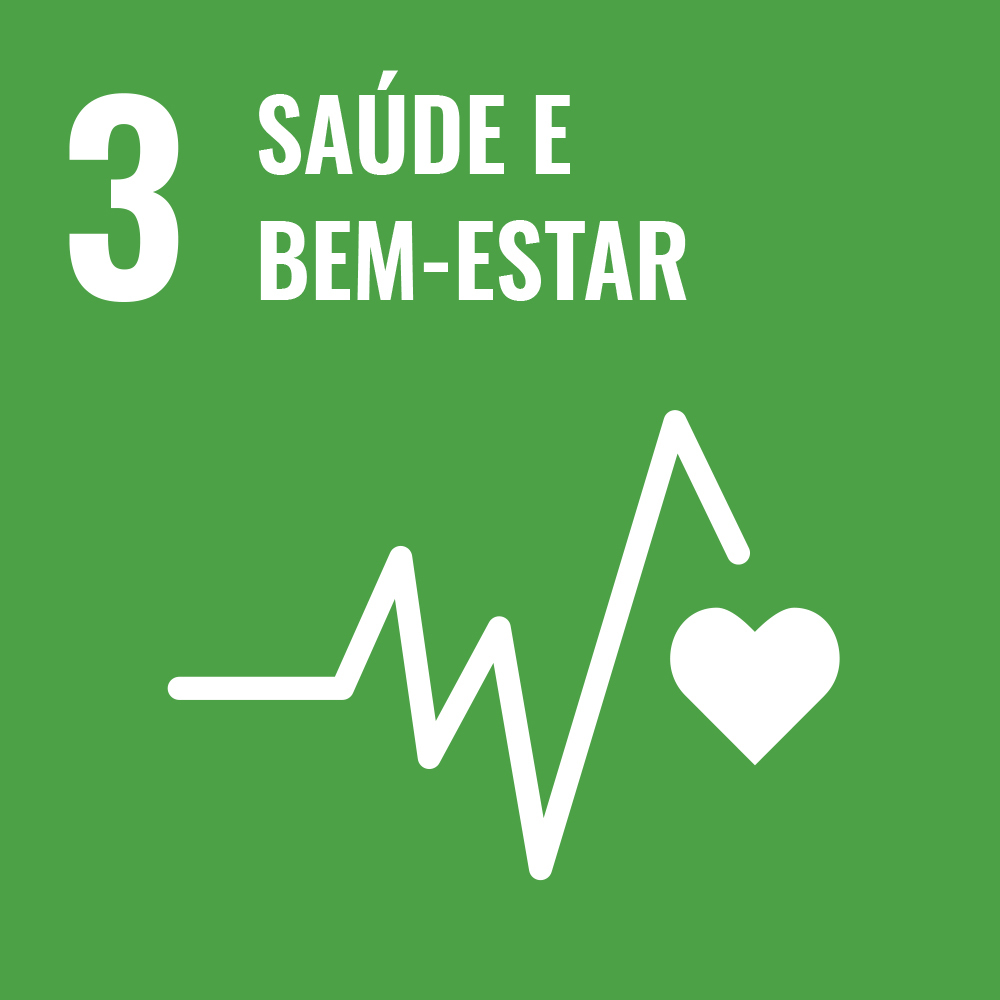
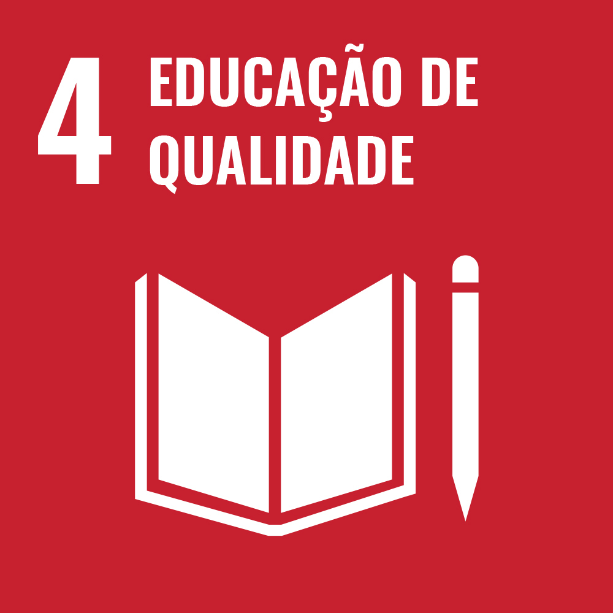
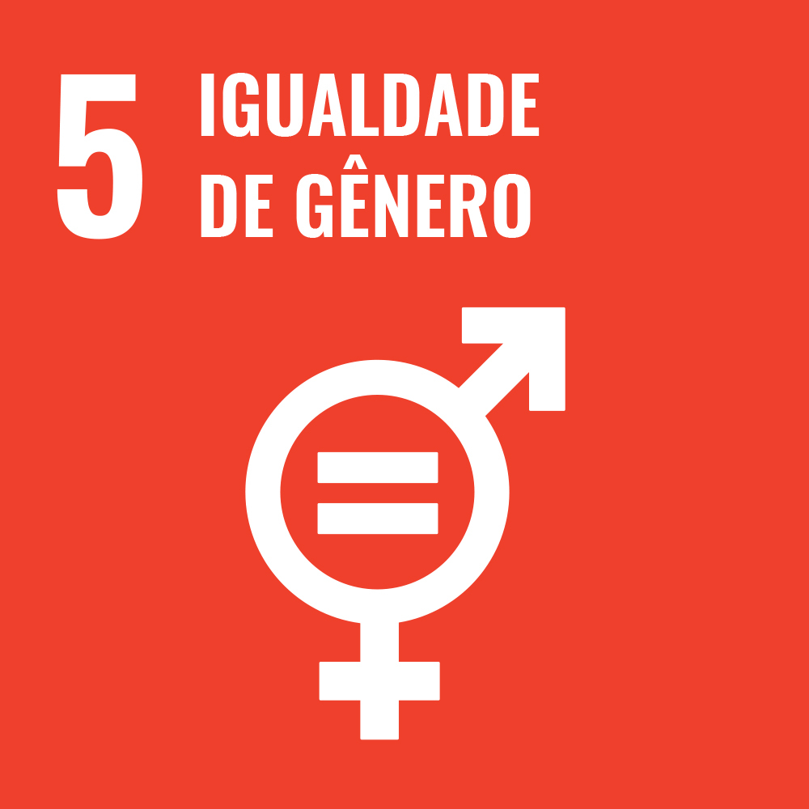
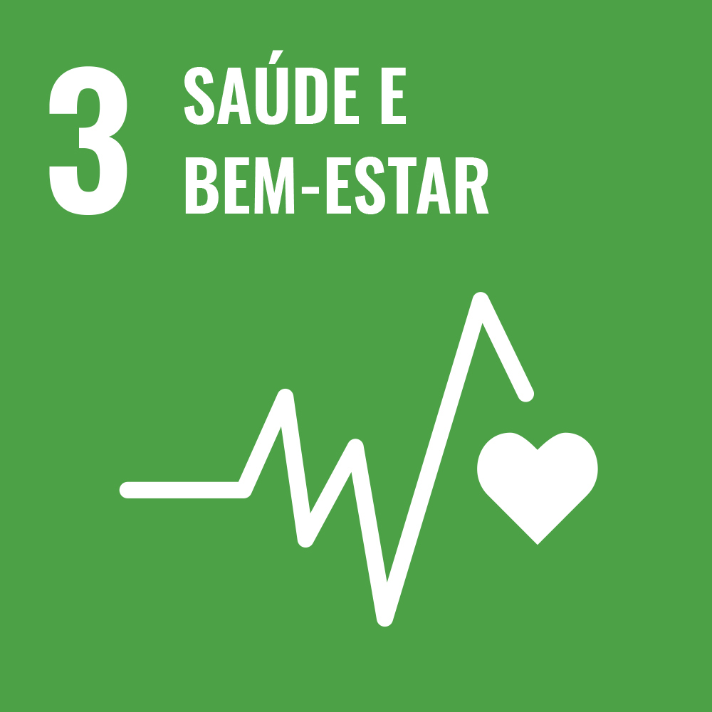
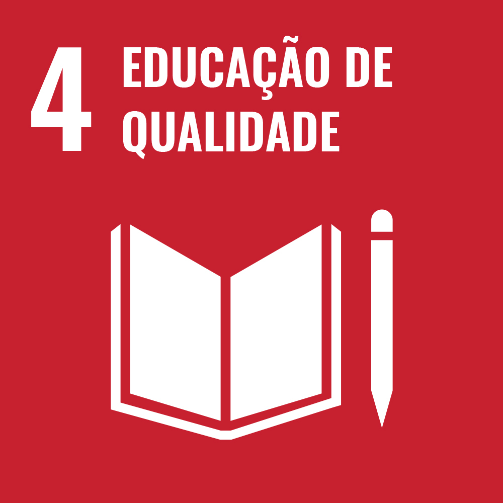
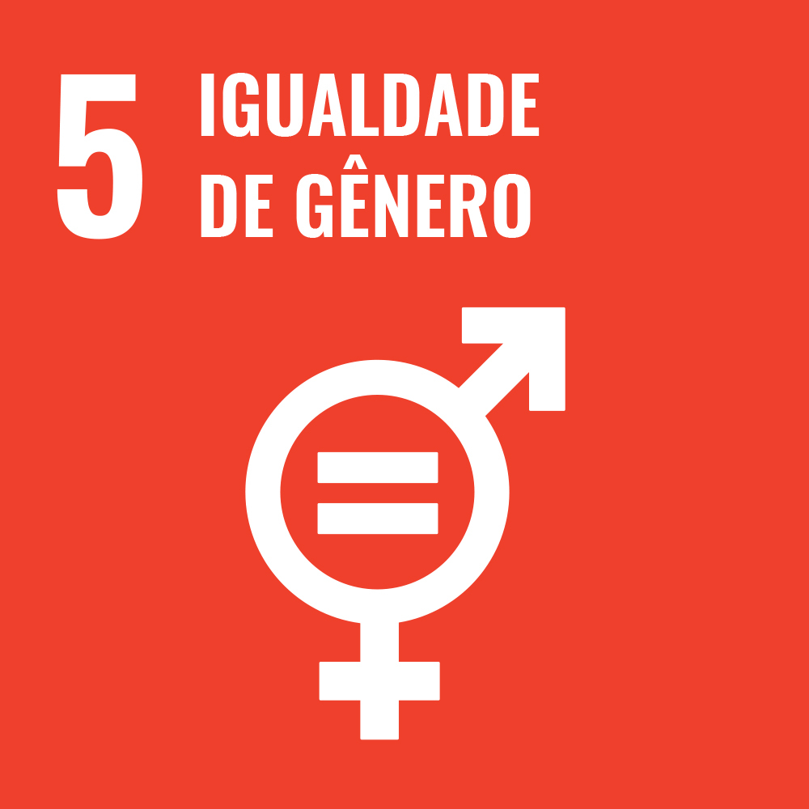
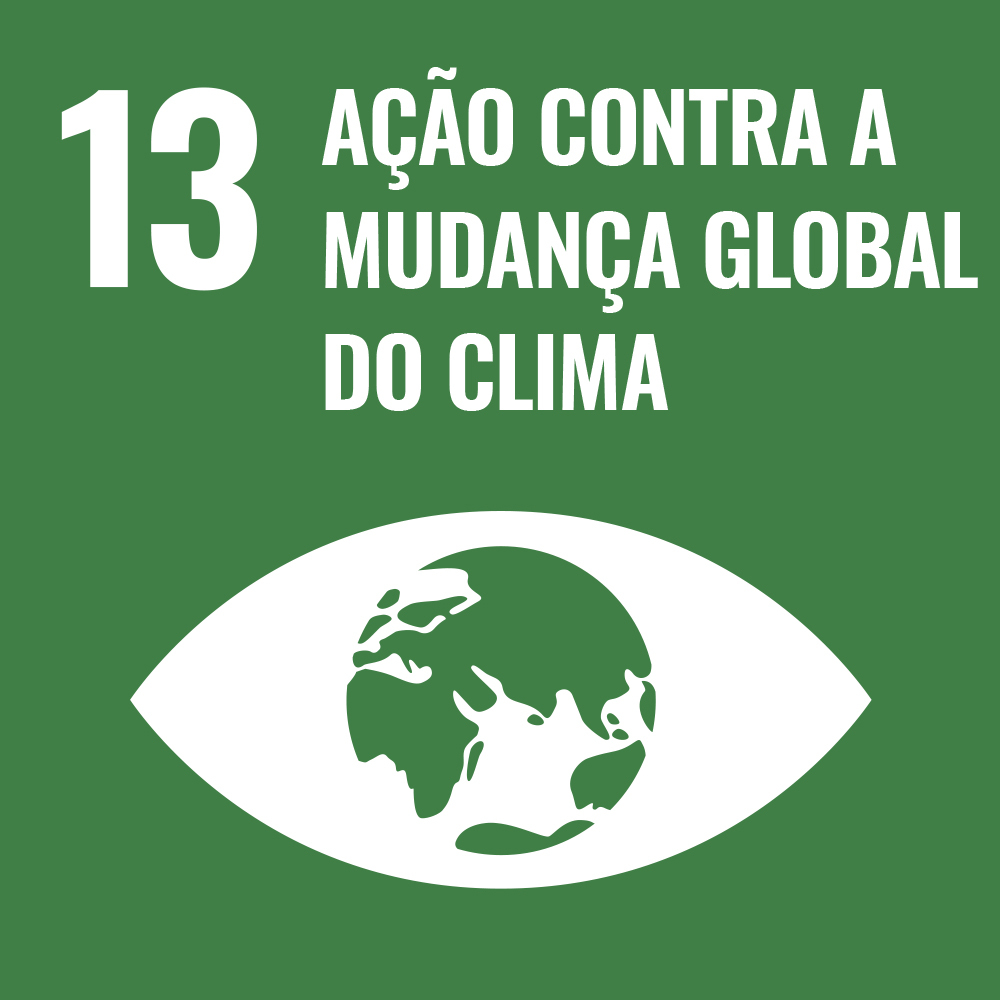
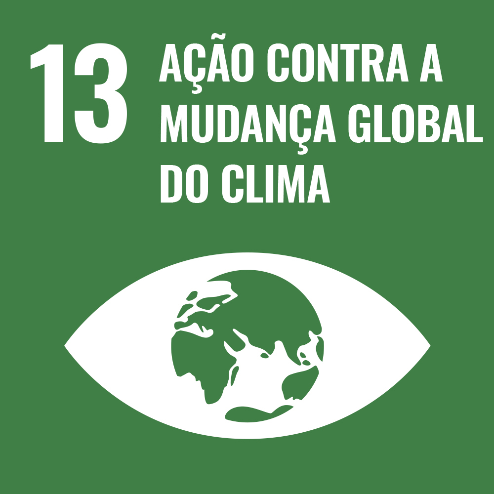
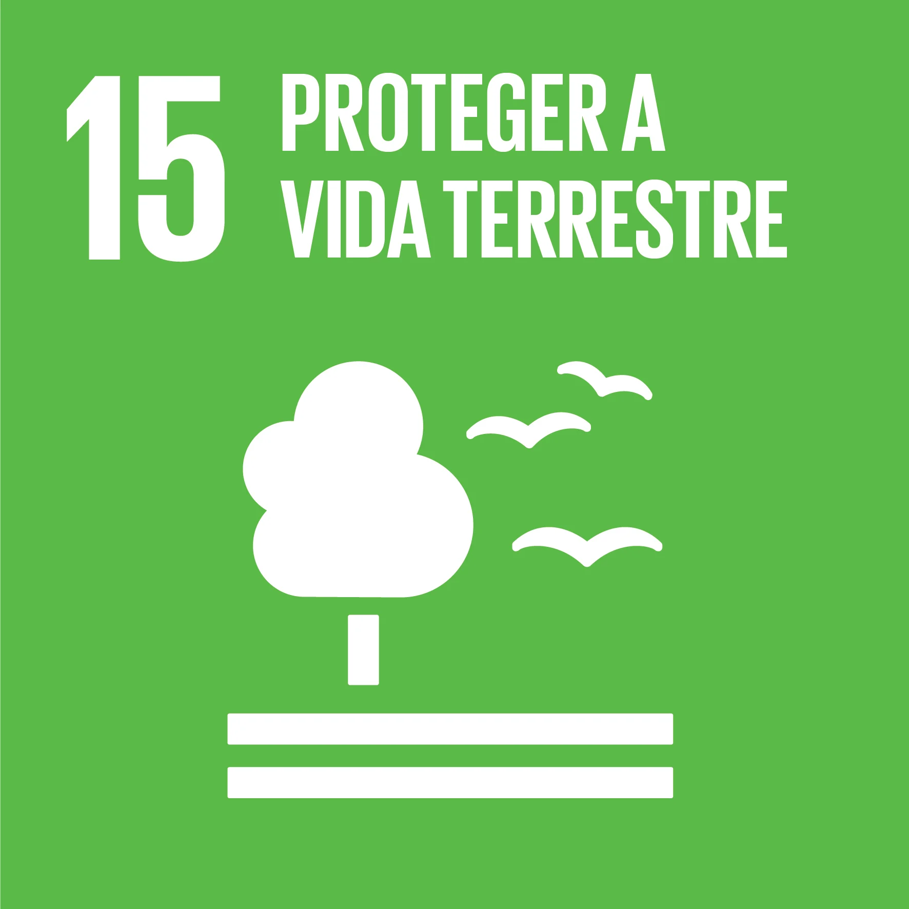
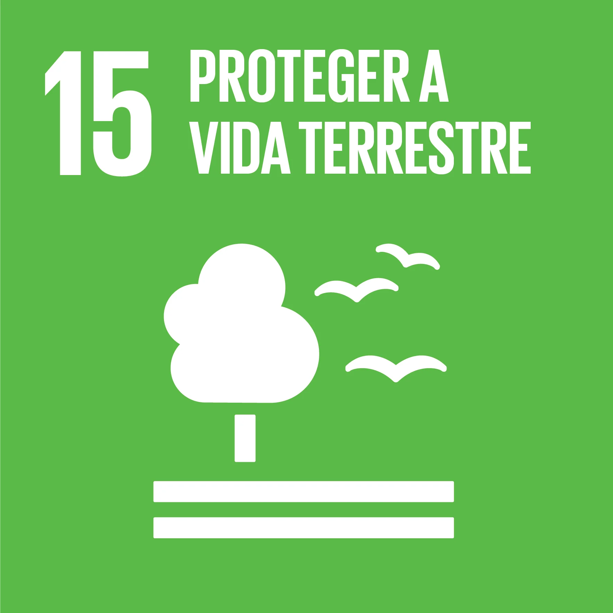

OS ODS
Objetivos de Desenvolvimento Sustentável
O que são as ODS?
As ODS referem-se aos Objetivos de Desenvolvimento Sustentável. As ODS são uma série de 17 objetivos estabelecidos pelas Nações Unidas em 2015 como parte da Agenda 2030 para o Desenvolvimento Sustentável. Esses objetivos foram criados para abordar os desafios sociais, econômicos e ambientais enfrentados em todo o mundo, e têm como objetivo promover a prosperidade e o bem-estar das pessoas, proteger o planeta e garantir a paz e a parceria global.
Um dos 17 Objetivos de Desenvolvimento Sustentável possui metas específicas a serem alcançadas até o ano de 2030. Alguns dos principais objetivos incluem a erradicação da pobreza, a promoção da igualdade de gênero, a garantia da educação de qualidade, o combate às mudanças climáticas, a conservação dos recursos naturais, a promoção da saúde e do bem-estar, entre outros.
As ODS são uma chamada à ação para governos, setor privado, sociedade civil e indivíduos trabalharem juntos em direção a um futuro mais sustentável e equitativo. A implementação dos Objetivos de Desenvolvimento Sustentável requer esforços coordenados em níveis global, nacional e local, e envolve uma ampla gama de atores e iniciativas em todo o mundo. Abaixo do texto você poderá ver um vídeo sobre o que são as ODS de forma clara, e logo em seguida todas os 17 Objetivos de Desenvolvimento Sustentável:

 







 

 

O ODS 5(IGUALDADE DE GÊNERO)
ODS 5 é o Objetivo de Desenvolvimento Sustentável das Nações Unidas que trata da Igualdade de Gênero. O objetivo é alcançar a igualdade de gênero e empoderar todas as mulheres e meninas. Ele pede o fim da discriminação (5.1) e da violência (5.2) contra mulheres e meninas
Bem, o primeiro passo para dar uma conclusão a discriminação e violência é: Começar pela educação em geral sendo dentro de casa pelos pais ou responsáveis e reforçada nas escolas, aumentando o suporte seja virtualmente e fisicamente para que essas mulheres caso precisem buscar ajuda, segundo o Fórum Brasileiro de Segurança Pública (FBSP), 35 mulheres foram agredidas física ou verbalmente por minuto no Brasil em
2022. 28,9% (18,6 milhões), podemos ver que isso é claramente um problema e por isso o próprio governo deveria criar mais propagandas incentivando-as a fazerem denúncias pois muitas das vezes essas mulheres têm medo ou as vezes até vergonha de denunciar esses agressores principalmente as que são menores de idade. Confira abaixo mais dados do (IBGE) sobre a violência contra as mulheres.
Com isso podemos ver que ainda temos muitas coisas para resolver na sociedade como um todo e lembrando que pequenos hábitos fazem a diferença e com educação e respeito podemos sim concluir essas metas para que todos podemos viver em uma sociedade mais inclusiva e acolhedora para todo mundo.
.png)
.png)
Reflexões sobre Ed. Física
1.Qual é a importância dos espaços públicos abertos na promoção da atividade física e na saúde da comunidade? Discutam como os parques, praças, pistas de caminhada e outras áreas públicas ao ar livre podem influenciar positivamente os hábitos de exercício das pessoas. Quais são os benefícios físicos e mentais associados à prática de atividades físicas nesses espaços?
Os espaços públicos abertos desempenham um papel crucial na promoção da atividade física e na melhoria da saúde da comunidade. Eles oferecem um ambiente acessível e convidativo para as pessoas se envolverem em diversas atividades físicas, como caminhadas, corridas, ciclismo, jogos esportivos e exercícios ao ar livre. Esses espaços ocupam um papel multifacetado na promoção da saúde e do bem-estar, tanto físico quanto mental, e têm um impacto positivo significativo em vários aspectos.
2.Quais são os fatores de design que tornam um espaço público atrativo para a prática de atividade física?Como um espaço bem projetado pode encorajar diferentes faixas etárias e níveis de condicionamento físico a se envolverem em atividades ao ar livre?
Um espaço público bem projetado pode desempenhar um papel significativo em incentivar pessoas de diferentes faixas etárias e níveis de condicionamento físico a se envolverem em atividades ao ar livre. Ao projetar um espaço público com esses fatores em mente, é possível criar um ambiente que atraia e motive uma ampla variedade de pessoas a se envolverem em atividades físicas ao ar livre. A inclusão de elementos que promovem a interação social, a acessibilidade e a segurança garantirão que o espaço seja utilizado de forma eficaz por diferentes grupos, contribuindo para uma comunidade mais saudável e ativa.
3.Quais são os fatores de design que tornam um espaço público atrativo para a prática de atividade física?Como um espaço bem projetado pode encorajar diferentes faixas etárias e níveis de condicionamento físico a se envolverem em atividades ao ar livre?
Promover a utilização de espaços públicos abertos para a atividade física é crucial para a saúde e bem-estar das comunidades. Esses espaços oferecem uma oportunidade valiosa para as pessoas se exercitarem, socializarem e desfrutarem de um estilo de vida mais ativo. E após debater um pouco, tivemos algumas de ideia para o incentivo dessas atividades: Campanhas de conscientização, programas de atividade Física em Grupo, eventos esportivos e recreativos, programas educativos em escolas, entre outros.
4.Considerando a interrelação entre os Objetivos de Desenvolvimento Sustentável (ODS) 3 ("Saúde e Bem-estar") e 11 ("Cidades e Comunidades Sustentáveis"), como a promoção da atividade física nos espaços públicos abertos pode contribuir para a construção de cidades que atendam a esses objetivos de forma integrada? Quais são os desafios e oportunidades de conciliar os ODS 3 e 11 em benefício tanto das pessoas quanto do meioambiente?
Ao criar ambientes que incentivam a atividade física regular, as cidades podem alcançar benefícios integrados que melhoram a qualidade de vida das pessoas e criam para a sustentabilidade urbana. Aqui estão alguns pontos que demonstraram essa interação. A promoção da atividade física melhora a saúde física e mental das pessoas, acolhe o risco de doenças crônicas, obesidade e estresse. também tem um impacto significativo no ambiente urbano como Redução da Poluição do Ar.
Referências
OBJETIVOS de desenvolvimento sustentável: IPEA: instituto de pesquisa econômica aplicada. [S. l.], 2019. Disponível em: https://www.ipea.gov.br/ods/.
CENTRAL DO BRASIL PLANALTO. Ibge (org.). Panorama: Ibge. [S. l.], 28 maio 2023. Disponível em: https://censo2022.ibge.gov.br/panorama/. Acesso em: 31 jul. 2023.
ESTRATÉGIA Ods: Ods 5. [S. l.], 2019. Disponível em: https://www.estrategiaods.org.br/os-ods/ods5/. Acesso em: 31 jul. 2023.
INOVA 7: Laboratório de inovação: Alcançar a igualdade de gênero é o Objetivo de Desenvolvimento Sustentável nº 5 da ONU. [S. l.], 5 nov. 2021. Disponível em: https://www.trt7.jus.br/index.php?option=com_content&view=article&id=4637:alcancar-a-igualdade-de-genero-e-o-objetivo-de-desenvolvimento-sustentavel-n-5-da-onu&catid=261&Itemid=1170. Acesso em: 31 jul. 2023.
ODS 5: Alcançar igualdade de gênero e empoderar todas as mulheres e meninas. Nospodemosparana, [S. l.], p. v. 9 n. 2 (2021), 5 nov. 2021. Disponível em: https://www.fiepr.org.br/nospodemosparana/uploadAddress/ODS_5[71578].pdf.Acesso em: 31 jul. 2023.
Versão em inglês:
https://senacscs.github.io/t3/bruno/ods/indexen.html